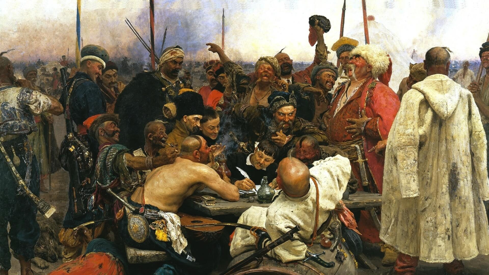

History of Ukraine
It all began with Kyiv Rus.
It existed from the 9th to the 13th century, uniting lands from the Black Sea to the Baltic Sea.
In 882, Prince Oleg killed the Kyiv rulers Askold and Dir to make Kyiv the "mother of all Rus cities"
and to defend against attacks by Scandinavian tribes (Varangians).
Then the descendants of the Rurik dynasty came to power, whose names are well-known to us from history lessons:
Igor, Olga, Sviatoslav, Volodymyr the Great, and Yaroslav the Wise.
Over the next 300 years, Left-Bank Ukraine was under the influence of Moscow, while Right-Bank Ukraine was influenced by Poland and Lithuania.
As a result of the national liberation war of 1648-1657, a part of Ukraine gained independence.
Bohdan Khmelnytsky founded the Zaporozhian Host and made every effort to maintain the achieved statehood,
which was not easy given the presence of three aggressive neighbors who did not recognize the right to independence.

Due to the division of Ukraine among three different states, the Ukrainians themselves did not fully support the ideas of national revival.
In 1672, the Polish-Turkish War broke out, during which Podilia came under Ottoman control,
and Kamianets-Podilskyi temporarily became the administrative center.
In 1678, Ukraine was divided along the Dnipro River.
However, the revolutionary years did not pass without a trace: hetmans abolished serfdom, built churches, introduced democracy,
and provided land to peasants that was previously owned by Polish burghers.
After the death of Bohdan Khmelnytsky, the country lost its unity and found itself on the brink of a civil war.
In 1681, the Russian Empire signed a treaty with the Ottoman Empire establishing the Dnieper River as the border between their territories.
During the Great Northern War that began in 1700,
Ivan Mazepa, taking advantage of the situation, attempted to break free from the control of the Russian Empire, but he suffered defeat.
In 1917, after the February Revolution which led to the overthrow of the monarchy,
the Ukrainian ethnic lands gained autonomy within the Russian Empire. The Bolsheviks came to Ukraine,
attempting to influence Ukrainians with communist ideology.
It was during this time that the territory of the Ukrainian People's Republic was invaded by the Nazis (during World War I),
and the Bolsheviks temporarily retreated to Russia.
When the First World War ended, true chaos began. The Bolsheviks returned to the territory of Ukraine,
where they faced opposition from nationalists and monarchists.
After the state coup in 1918, Mykhailo Hrushevsky was removed from his position as the head of the Central Rada,
and hetman Pavlo Skoropadsky came to power.
The government was too weak to resist the Central Rada did not receive support from the population or parties,
peacefully relinquishing its power.
During the years of the Great Patriotic War (1941-1945), the territory of Ukraine was fully occupied,
and many cities and villages were completely destroyed.
Over 5 million citizens of Ukraine were killed.
On August 24, 1991, the Verkhovna Rada (Ukrainian parliament) declared the independence of Ukraine.
In November 2013, the events of Euromaidan began, leading to a change in government.
On March 11, 2014, the Republic of Crimea and the city of Sevastopol unilaterally declared independence.
On May 12, the leadership of the self-proclaimed Donetsk and Luhansk People's Republics declared independence.
Soon after, military actions began in the territories of these republics.
On February 24, 2022, a full-scale invasion of Ukraine by russia began, originating from the territories of russia, Crimea, and belarus.
As of today, this is one of the largest war in the world after the two World Wars.
People who survived the Second World War say that this war is even more terrifying and cruel.
Ukraine will never forget or forgive such crimes:
torture,
violence against women and underage girls by Russian soldiers,
mass shootings (killing people simply because they are Ukrainians),
launching aviation rockets and bombs at a drama theater in Mariupol,
mass killings of captives at Azovstal,
shelling of cities across Ukraine,
mass kidnappings of children,
executions of evacuation transport,
missile strikes on city centers in Kharkiv,
Mariupol,
Kyiv,
Kremenchuk,
and
other cities.
Light and eternal memory to all the victims of the russian aggression.
Read and see more here:
Information and images about russian terrorism
Ukraine is an Olympic nation
|
Year
|
Gold
|
Silver
|
Bronze
|
|
2000
|
3
|
10
|
10
|
|
2004
|
8
|
5
|
9
|
|
2008
|
7
|
5
|
13
|
|
2012
|
5
|
4
|
10
|
|
2016
|
2
|
5
|
4
|
|
2020
|
1
|
6
|
12
|